Versão para aprovação.
- Narração com voz profissional (ElevenLabs); a trilha de fundo entra numa próxima versão.
- Os itens entre colchetes ([VALOR], [DATA LIMITE], bônus e garantia) são marcadores que recebem os dados reais da oferta antes de veicular. Até lá, a narração fala da oferta de forma neutra ("um valor especial", "dois bônus exclusivos").
- As imagens podem ser trocadas: abaixo estão as 3 opções de cada tomada (a de borda terracota é a que está no vídeo).
Imagens do vídeo e alternativas
Todas do Pexels, com licença de uso comercial gratuito. Sem rostos famosos, logotipos, brasões oficiais ou documentos com dados legíveis.
Cena 1 · Gancho
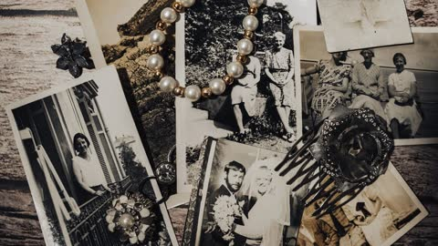
Foto: fotios-photos / Pexels
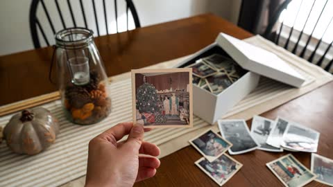
Foto: poopfishsocks / Pexels
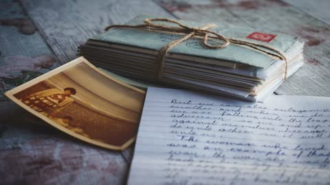
Foto: suzyhazelwood / Pexels
Foto: shvets-production / Pexels
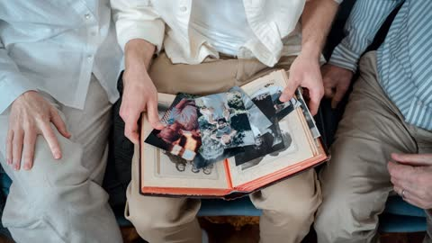
Foto: cottonbro / Pexels
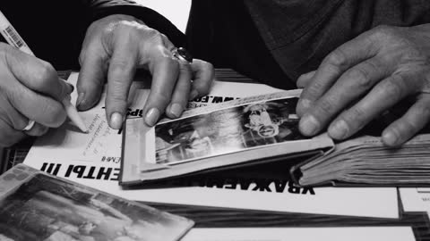
Foto: plato-terentev-3804555 / Pexels
Cena 2 · O sonho
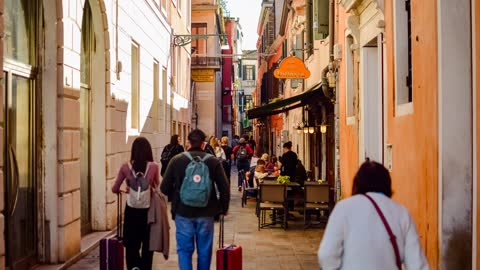
Foto: viniciusvieirafotografia / Pexels
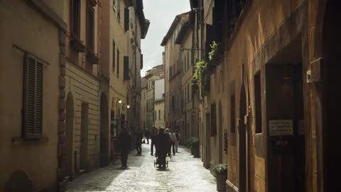
Foto: natia-goglidze-2148069520 / Pexels
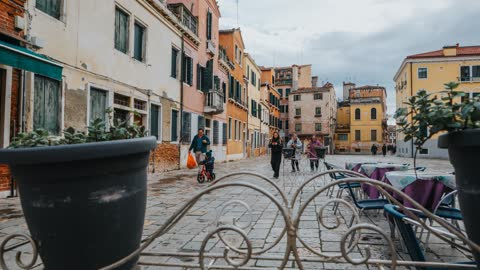
Foto: helen1 / Pexels
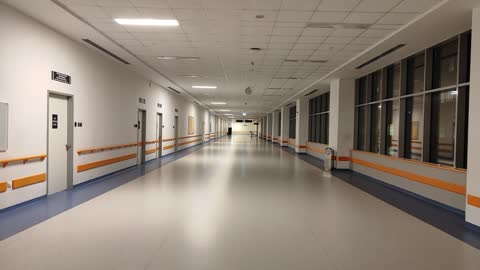
Foto: burcak-cubukcu-1107169385 / Pexels
Foto: cristian-rojas / Pexels
Foto: oles-kanebckuu-34911 / Pexels
Foto: chipi1189 / Pexels
Foto: yankrukov / Pexels
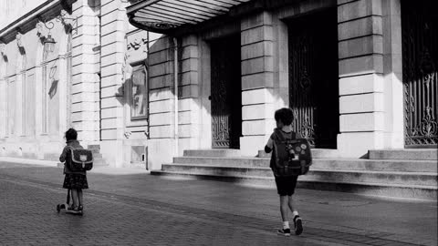
Foto: alexis-b-1699196 / Pexels
Foto: victorfreitas / Pexels
Foto: anton-porsche / Pexels
Foto: ekaterinabelinskaya / Pexels
Foto: zandatsu / Pexels
Foto: tima-miroshnichenko / Pexels
Foto: cottonbro / Pexels
Foto: askar-abayev / Pexels
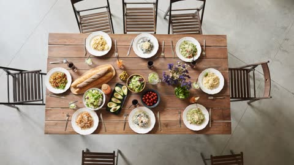
Foto: fauxels / Pexels
Foto: ron-lach / Pexels
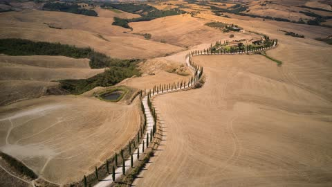
Foto: doozydoom-124360297 / Pexels
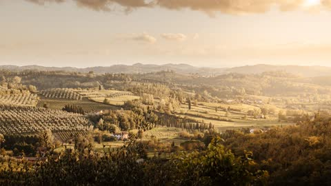
Foto: andreamostiphotography-32233445 / Pexels
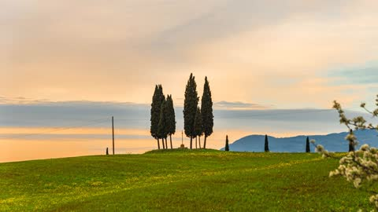
Foto: duc-tinh-ngo-2147637857 / Pexels
Cena 3 · A virada
Foto: diverzant / Pexels
Foto: pixabay / Pexels
Foto: serdar-baris-2093847029 / Pexels
Foto: karola-g / Pexels
Foto: anthonyshkraba-production / Pexels
Foto: yankrukov / Pexels
Foto: towfiqu-barbhuiya-3440682 / Pexels
Foto: towfiqu-barbhuiya-3440682 / Pexels
Foto: mike-468229 / Pexels
Foto: olga-vunder-1562344 / Pexels
Foto: marika-ponzio-2151092693 / Pexels
Foto: regan-dsouza-1315522347 / Pexels
Cena 4 · A solução
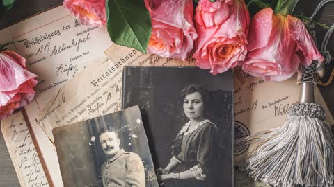
Foto: suju / Pexels
Foto: mart-production / Pexels
Foto: tima-miroshnichenko / Pexels
Foto: mikhail-nilov / Pexels
Foto: ron-lach / Pexels
Foto: kampus / Pexels
Foto: mart-production / Pexels
Foto: ron-lach / Pexels
Foto: sora-shimazaki / Pexels
Foto: anntarazevich / Pexels
Foto: markusspiske / Pexels
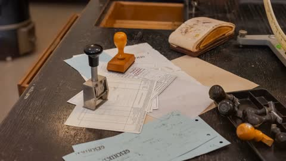
Foto: nietjuhart / Pexels
Foto: kampus / Pexels
Foto: kindelmedia / Pexels
Foto: pavel-danilyuk / Pexels
Cena 5 · A oferta
Foto: matteo-parisi-27261509 / Pexels
Foto: magda-ehlers / Pexels
Foto: hellojoshwithers / Pexels
Cena 6 · Chamada para ação
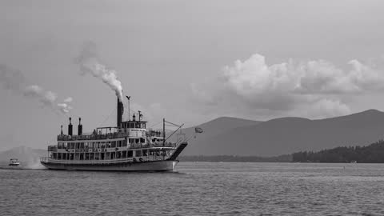
Foto: justin-coonan / Pexels
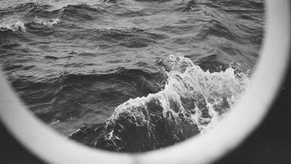
Foto: anna-tikhonova-76944914 / Pexels
Foto: aysegul-aytoren-46790226 / Pexels
Foto: kaipro / Pexels
Foto: leos / Pexels
Foto: duc-tinh-ngo-2147637857 / Pexels